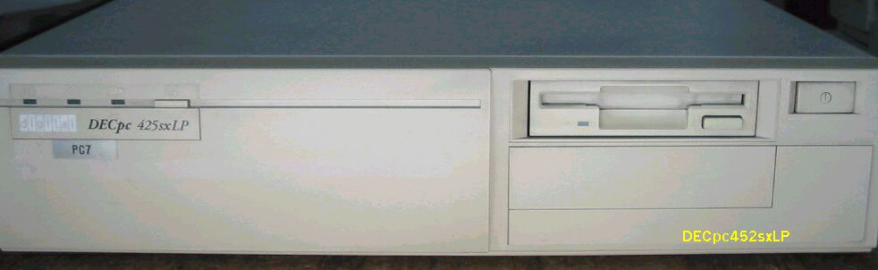
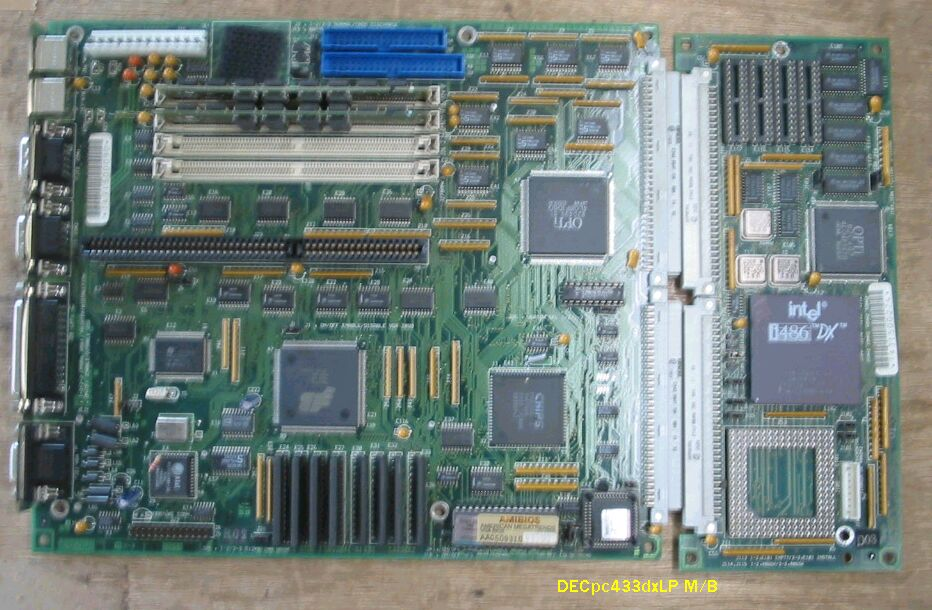
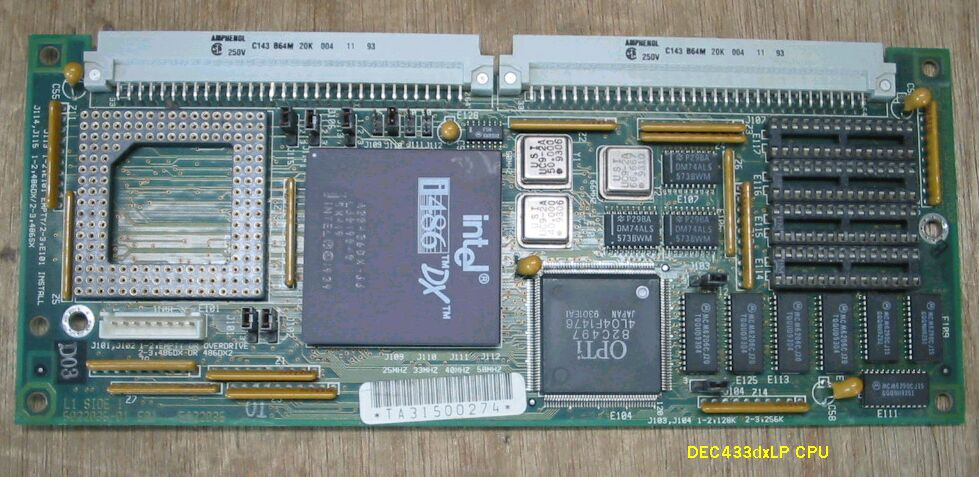
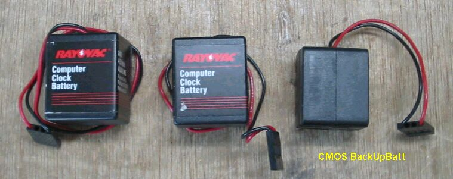

DECpc425sxLP
このPCは、前に何度かみかけたが、実用的でないパソコンを、苦労して持ち帰る気がしなくて、見逃していた。
しかし今回は、車で出かけたついでに、H-Oに立ち寄ったとき見つけたので、425sxと433dxを捕獲した。下が
前面の写真で、高さが９０mm、部品がぎっしり詰まっている感じです。

次はマザーボードです。CPU部分が分かれており、コネクタで接続されています。つまり425sxと、433dxはCPUボード
が共通になるわけです。グラフィックチップはS3の86C924で、古いロゴマークが見えます。

CPUボードを拡大します。クロックオッシレータは40MHz、50MHz、66MHzの３種類が載っており、ジャンパーpinの設定によって、
25MHz、33MHz、40MHz、50MHzのクロックを、CPUに与えられます。ODP用のソケットも付いており、ちょっといじってみたくなります。

Computer Clock Battery
RAYOVACの4.5Vアルカリ電池が、CMOS-BackUp用に付いていました。この電池は、APPLEのLC575やLC630などに付いているものと同じで、MAC派には
おなじみのものです。古いので当然電圧無しです。従って、このパソコンを立ち上げるたびに、BIOSの設定が必要で、IDE-HDDのCHSを指定しなければ
ならず、大変です。

(2003/09/11記)
古いAT互換機関係のページに戻る